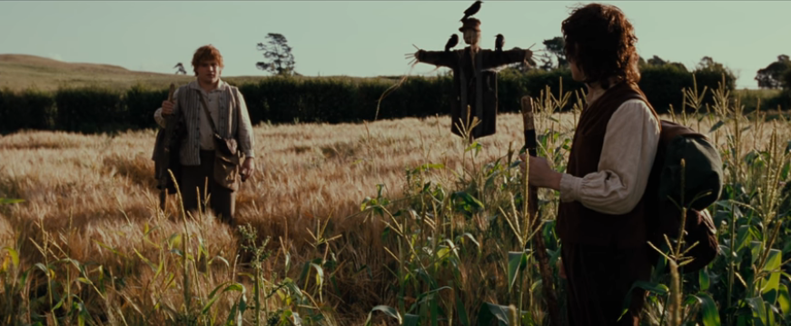
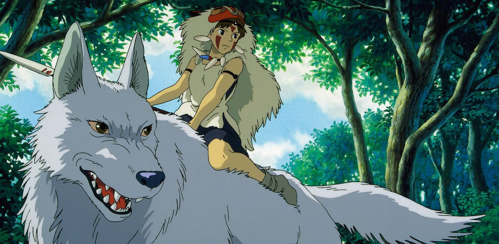
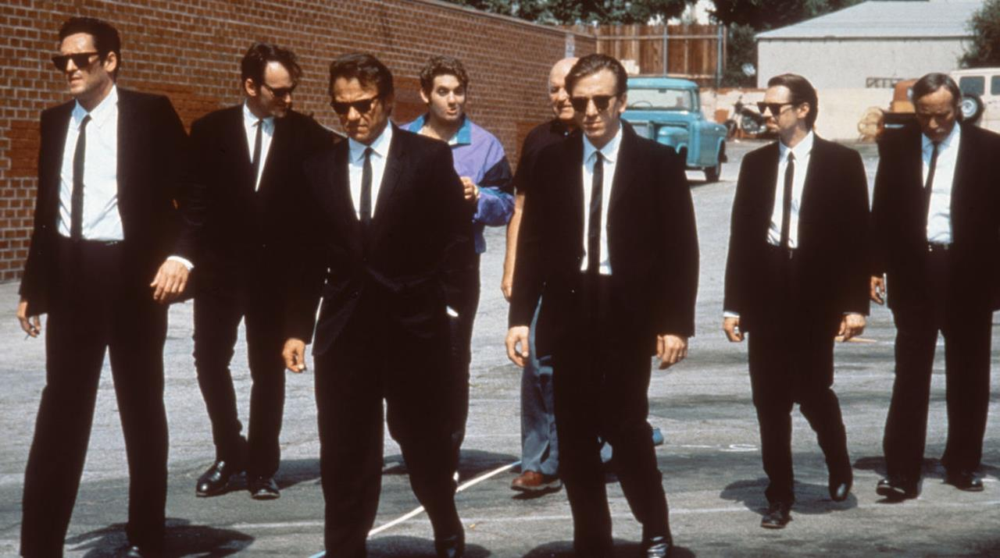
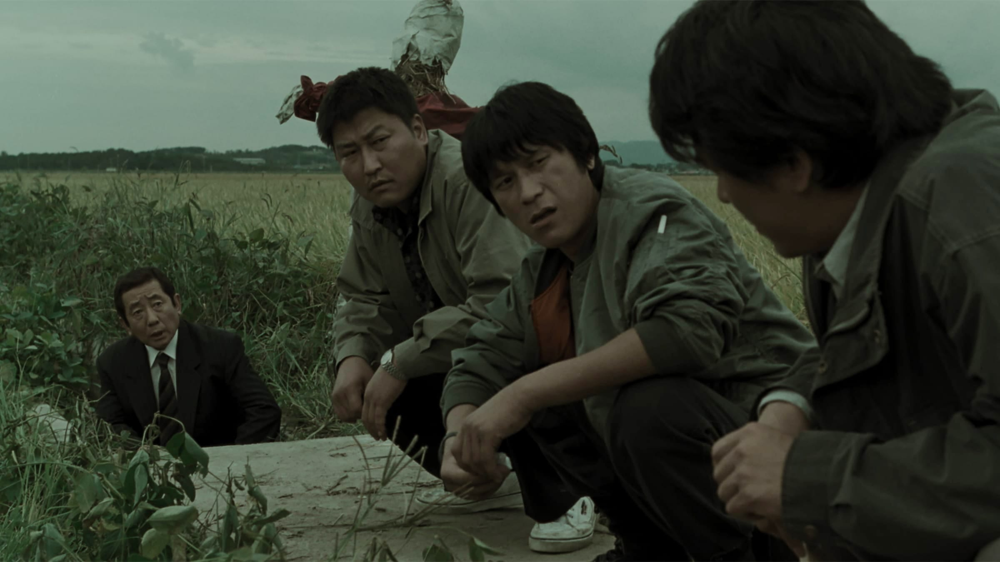
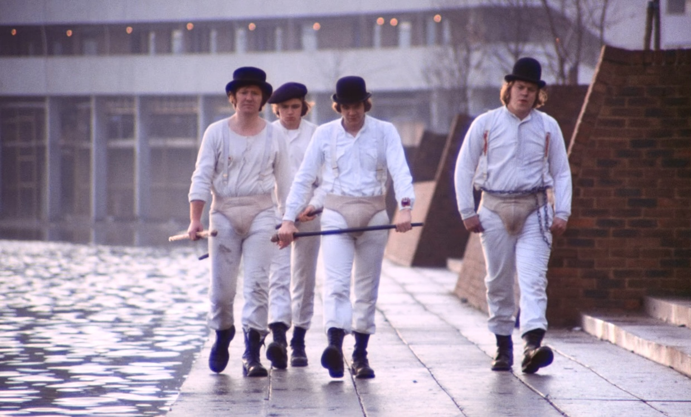

1.
Il Signore degli Anelli - La Compagnia dell'Anello
Molto tempo fa, nella Seconda Era della Terra di Mezzo, furono forgiati diciannove grandi Anelli, ciascuno dei quali accordava lunga vita e poteri magici a chi lo portasse.
Ma Sauron, l'Oscuro Signore di Mordor, forgiò un Anello Sovrano nelle viscere del monte Fato, con esso intendeva portare tutti gli altri Anelli sotto il suo dominio. Adesso, il futuro della civiltà dipende dal destino dell'Anello Sovrano, che il fato ha deposto nelle mani di un giovane Hobbit di nome Frodo Baggins, che, ereditato l'Anello, entra nella leggenda...
Ma Sauron, l'Oscuro Signore di Mordor, forgiò un Anello Sovrano nelle viscere del monte Fato, con esso intendeva portare tutti gli altri Anelli sotto il suo dominio. Adesso, il futuro della civiltà dipende dal destino dell'Anello Sovrano, che il fato ha deposto nelle mani di un giovane Hobbit di nome Frodo Baggins, che, ereditato l'Anello, entra nella leggenda...
"Se faccio ancora un passo, non sarò mai stato così lontano da casa mia."

2.
Principessa Mononoke
Ashitaka, nobile divenuto impuro e ramingo, deve intraprendere un viaggio per salvarsi da una maledizione e imparare a vedere le cose con sguardo non annebbiato.
Attraverserà la foresta sacra e la città di ferro, e verrà a conoscere le due facce della medaglia dell'inevitabile lotta tra uomo e natura, rappresentate da Eboshi, la padrona della città di ferro, e San, la principessa Mononoke.
Attraverserà la foresta sacra e la città di ferro, e verrà a conoscere le due facce della medaglia dell'inevitabile lotta tra uomo e natura, rappresentate da Eboshi, la padrona della città di ferro, e San, la principessa Mononoke.
"Non posso perdonare agli umani le cose orribili che hanno fatto."

3.
Reservoir dogs
Scoppia l’inferno dopo una rapina: i criminali si ritrovano nascosti in un magazzino mentre aleggia l’ombra di un tradimento da parte di una spia, e intanto i poliziotti sono alle loro calcagna.
Il nucleo di Reservoir Dogs non è l’ordine sociale e la classificazione in buoni e cattivi. Il fulcro è il miscuglio di due poli: il bene ed il male.
Il nucleo di Reservoir Dogs non è l’ordine sociale e la classificazione in buoni e cattivi. Il fulcro è il miscuglio di due poli: il bene ed il male.
"Ragazzi, non fate giochi pesanti. Poi qualcuno si fa male e si mette a piangere!"

4.
Memories of a murder
Corea del Sud, 1986. In una piccola cittadina di campagna, in un canale di scolo lungo una strada che attraversa i campi coltivati, viene ritrovato il corpo di una giovane donna barbaramente stuprata ed uccisa. Poco tempo dopo viene ritrovata un'altra vittima. La polizia locale è impreparata, non ha né le risorse umane né i mezzi tecnici per affrontare delitti di tale gravità.
"Forse non so nient'altro,
ma i miei occhi possono leggere le persone."

5.
A Clockwork Orange
Il titolo originale trae origine da un modo di dire, "As queer as a clockwork orange" tradotto letteralmente come "Strano come un'arancia a orologeria".
In un futuro imprecisato, vive il giovane Alexander DeLarge, un ragazzo di famiglia operaia, eccentrico, antisociale e capo della banda criminale dei Drughi.
In un futuro imprecisato, vive il giovane Alexander DeLarge, un ragazzo di famiglia operaia, eccentrico, antisociale e capo della banda criminale dei Drughi.
“E d'un tratto capii che il pensare è per gli stupidi, mentre i cervelluti si affidano all'ispirazione!”
